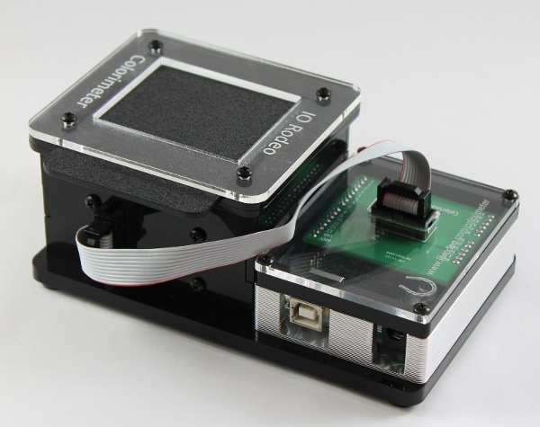

Colorimeter User Manual
Open source DIY kit
Contents
::
Introduction
»
Open source DIY kit
¶

Kit contents
¶
Introduction
Kit Contents
Parts List
Electronics Parts List
Colorimeter Hardware
Bag A - Enclosure hardware
Bag B - Electronics hardware
Bag C - Arduino and TuxCase hardware
Enclosure Parts (laser-cut acrylic)
Optional TuxCase kit
TuxCase kit contents
Optional LED wavelengths
LED Board ver B
LED Board ver C
Using custom led boards with colorimeter software
Assembly instructions
¶
Assembly of the colorimeter
Mounting the Arduino
Option 1: Assembly of Arduino onto the acrylic base
Option 2: Assembly of Arduino with TuxCase
Programming Arduino with colorimeter firmware
Software
¶
Open source colorimeter software
Installing the open source software
Colorimeter basic program
Procedure: Connect-Calibrate-Measure
Additional software screenshots
Colorimeter plotting program
Procedure: Connect-Calibrate-Measure-Plot-Export
Additional software screenshots
Colorimeter concentration program
Procedure: Connect-Select-Calibrate-Measure
Additional software screenshots
Software features
Calibrating the colorimeter
Selecting custom LED boards
Changing significant digits
Graph fit
Selecting units (ppm or µM)
Changing sample rate
Sample Labs
¶
Lab 1: Introduction to Colorimetry
Background and Objectives
Materials
Methods
Sample Data
Lab 2: Beer’s Law and Molar Extinction Coefficients
Background and Objectives
Materials
Methods
Sample Data
Lab 3: Ammonia and nitrate measurements
Background and Objectives
Colorimetric tests
Materials
Chemicals and solutions
Methods
Sample Data
Updates
¶
Cuvette holder update
Hardware
Assembly
Indices and tables
¶
Index
Module Index
Search Page
Contents
::
Introduction
»